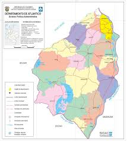

ATLANTICO

El departamento del Atlántico, ubicado en la región caribeña de Colombia, es conocido por su rica cultura, historia y economía. Su capital es Barranquilla, una ciudad dinámica y vibrante que se destaca por su carnaval, uno de los más importantes del país.
Geografía
El departamento del Atlántico se encuentra en la región caribeña de Colombia. Limita al norte con el mar Caribe, lo que le otorga un acceso privilegiado a las rutas marítimas. Al este, se encuentra el departamento de Magdalena; al sur, Bolívar; y al oeste, Sucre. Su territorio es mayormente plano, con algunas zonas de llanura y una costa que se extiende por alrededor de 80 kilómetros.
El clima es cálido, con temperaturas promedio que oscilan entre los 25 °C y 30 °C, y cuenta con una estación lluviosa que va de mayo a noviembre. Este clima favorece la agricultura, la pesca y el desarrollo turístico.
historia
La historia del Atlántico está marcada por la llegada de los colonizadores españoles en el siglo XVI, lo que llevó a la fundación de Barranquilla en 1629. Durante la época colonial, la región se convirtió en un importante puerto para el comercio de productos como el tabaco y el oro. A lo largo de los siglos, la influencia africana y indígena ha sido crucial en la formación de la identidad cultural del departamento.
Cultura
La cultura del Atlántico es vibrante y diversa. El Carnaval de Barranquilla, que se celebra en febrero, es uno de los festivales más importantes del país y ha sido declarado Patrimonio Cultural Inmaterial de la Humanidad por la UNESCO. Este evento reúne una mezcla de música, danza, y coloridos disfraces, reflejando la fusión de tradiciones africanas, indígenas y españolas.
La música es otra parte fundamental de la cultura atlanticense. Géneros como la cumbia y el porro son originarios de esta región y se celebran en fiestas y eventos. La gente del Atlántico también tiene una rica tradición oral y de narración de cuentos.
Economía
La economía del Atlántico se basa en varios sectores. Barranquilla, como principal ciudad del departamento, es un centro industrial y comercial clave. La zona portuaria de la ciudad permite la importación y exportación de mercancías, lo que favorece el comercio local e internacional.
En la agricultura, se cultivan productos como arroz, caña de azúcar, y frutas tropicales como mango y guanábana. La pesca también es significativa, con actividades que incluyen la captura de camarones y otros mariscos.
Turismo
El departamento del Atlántico ofrece varios atractivos turísticos. Las playas de Puerto Colombia son populares entre los locales y turistas, siendo un lugar ideal para disfrutar del sol y la gastronomía marina. También se puede visitar el Parque Cultural del Caribe en Barranquilla, que resalta la historia y cultura de la región.
Además, hay destinos naturales como la Ciénaga de Mallorquín y el Parque Natural Isla de Salamanca, que ofrecen oportunidades para el ecoturismo y la observación de aves.
Gastronomía
La gastronomía del Atlántico es otro aspecto destacado. Los platos típicos incluyen el sancocho, un guiso a base de carne y yuca; el pescado frito; y las arepas de huevo, que son muy populares en la región. También es común disfrutar de un buen plato de arroz con coco, acompañado de frutos del mar.
SI DESEA VOLVER A LA PAGINA PRINCIPAL, DE CLICK AQUI